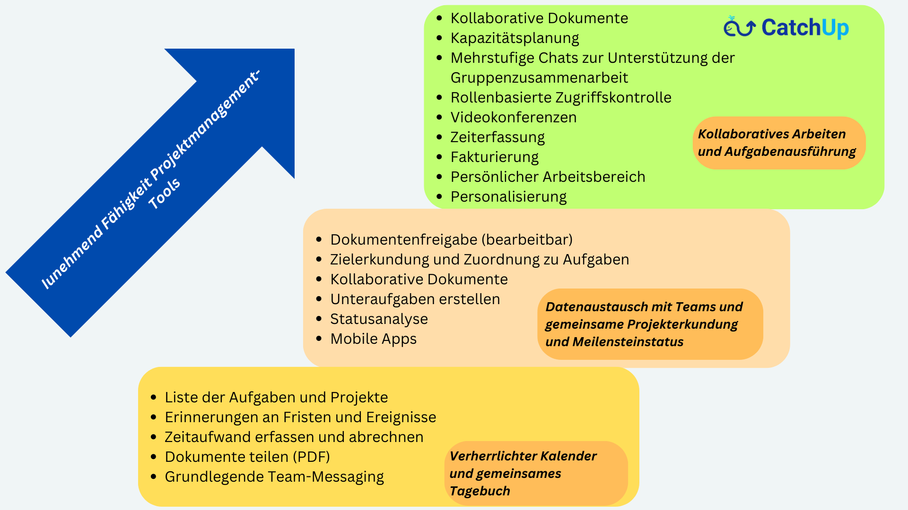

Wir können Ihnen zahlreiche Gründe nennen, aber Sie können Ihren auswählen, um zu CatchUp zu wechseln!
Weil wir die Herausforderungen der Zusammenarbeit und des Arbeitens in Hybrid- und Remote-Modellen verstehen!
Damit Sie sich auf das Wesentliche konzentrieren können, während CatchUp sich um den Rest kümmert!
Weil Sie es satt haben, sich mit einem Dutzend anderer Tools zu integrieren, die unsere Konkurrenz von Ihnen verlangt!
Weil es Ihnen schwer fällt, das volle Potenzial Ihrer Remote-Teams auszuschöpfen, während diese kreativen Köpfe Schwierigkeiten haben, zusammenzuarbeiten und zusammenzuarbeiten!
Weil Sie nicht mehr für teure Extras bezahlen möchten!
Denn die Leitung eines Projekts sollte kein Projekt an sich sein!
Weil Sie auf der Suche nach einer leistungsstarken, aber dennoch kostengünstigen und benutzerfreundlichen Projektmanagement- und Kollaborationsplattform sind!
Denn Sie suchen nicht nur ein Produkt, sondern ein Produkt mit einem Zweck!
Wir präsentieren... eine leistungsstarke und dennoch erschwingliche Umgebung der nächsten Generation, um Ihre organisatorischen Probleme zu lösen -
Alles an einem Ort, zu einem tollen Preis – Zugriff von allen Ihren Geräten!
Mit CatchUp können Sie Aufgaben organisieren, sie Ihren Teams zuweisen und Ihre Arbeit in wenigen Minuten verwalten. Es verfügt über alle Funktionen, die Sie benötigen, und viele weitere unter der Haube, die Sie entdecken können, wenn Sie sich damit vertrauter machen. Keine Eile, keine Sorge!
Bereit? Lass uns gehen!

CatchUp einrichten
Es ist einfach! Erstellen Sie eine Reihe von Projekten oder replizieren Sie Vorlagen für verschiedene, aber verwandte Aspekte Ihrer Arbeit. Fügen Sie diesem Projekt Teammitglieder hinzu, erstellen Sie wichtige Aufgaben und Aktionselemente, und schon kann es losgehen!
Aufgaben- und Projektmanagement
Arbeiten Sie mit Ihrem Team zusammen, um die Aufgaben und Aktionspunkte pünktlich zu erledigen und dokumentieren Sie die Ergebnisse dabei auch mithilfe von Echtzeit-Chats und Dateifreigabe. Integrierte effiziente Dienstprogramme (wie Kanban, Kalender, Aufgabenlisten, Notizen usw.) helfen Ihnen, Ihre Arbeit zu beschleunigen und produktiv zu bleiben. Sie können auch Dateien teilen und gemeinsam an Dokumenten arbeiten.
Optimieren
Sie können Projekte, Aufgaben, Aktionselemente und andere gemeinsame Arbeitsprodukte einfach hinzufügen, ändern oder entfernen und Ihren Arbeitsablauf nach Bedarf optimieren. Sie verfügen über umfangreiche Ansichten, unterstützt durch umfangreiche Suchfunktionen, um den Status auf einen Blick zu ermitteln und Bereiche mit weiterer Entwicklung zu identifizieren!
Auf jedem Gerät!
Ja, wir wissen, wie Teams funktionieren. Sie können CatchUp auf Ihrem Desktop für schwerere Aufgaben verwenden und unterwegs viel auf Ihren Smartphones oder Tablets erledigen!
Es ist sehr sicher und kann an Ihre Bedürfnisse angepasst werden, einschließlich der Bereitstellung vor Ort für größere Kunden. Ihre Daten sind sicher und gesichert!
Zahlen Sie nicht mehr für teure Extras, die sich summieren!
Wenn Sie für zusätzliche Videokonferenz-Tools und -Software bezahlen, die einen Arm und ein Bein pro Nutzung kosten, haben wir Ihnen dann gesagt, dass Videokonferenzen und Besprechungen in diesem Pauschalpreis enthalten sind? Erfahren Sie mehr, indem Sie uns ausprobieren.
Sie benötigen keine „Integrationen“ mit einem Dutzend anderer Tools, wie es unsere Konkurrenz von Ihnen verlangt!
Alle unsere Funktionen sind in einer einzigen Umgebung integriert – Besprechungen, Videokonferenzen, Dokumentenfreigabe, Aufgaben- und Projektmanagement, Echtzeit-Chats. Sie müssen Slack, Teams, OneDrive, Dropbox und Zoom nicht zusammenfügen, nur um etwas in Gang zu bringen! Das Leben ist schon komplex, die Arbeit muss es nicht sein!
Kostengünstiges Ausprobieren und Benutzen
Nein, wir verwenden keine Köder und Schalter. Sie können es kostenlos testen und jeden Monat ein Abonnement für Ihr Unternehmen zum Festpreis abschließen. Keine Überraschungen basierend auf der Gebühr pro Benutzer und Monat. Nur eine Pauschalgebühr für unbegrenzte Speicherung und Nutzung für Sie und Ihre Mitarbeiter.
Wir können es kaum erwarten, dass Sie uns ausprobieren und Erfolg haben! Lassen Sie uns wissen, wie wir es für Sie besser machen können. Wir sind noch nicht perfekt, aber Sie können es sein!
Also, worauf wartest Du?
Melden Sie sich an und nutzen Sie die Leistungsfähigkeit von CatchUp, um Ihre Ziele zu erreichen.
Warum Wal?
Denn unter dieser majestätischen und dennoch verspielten Plattform läuft ein sehr leistungsstarker Kern, der Ihre Projekte elegant zum Abschluss bringt.
Und ja! Es ist ein Produkt mit einem Zweck!
Für all die gute Arbeit, die wir geleistet haben, wird ein Teil unserer Einnahmen für die Rettung der Wale gespendet!